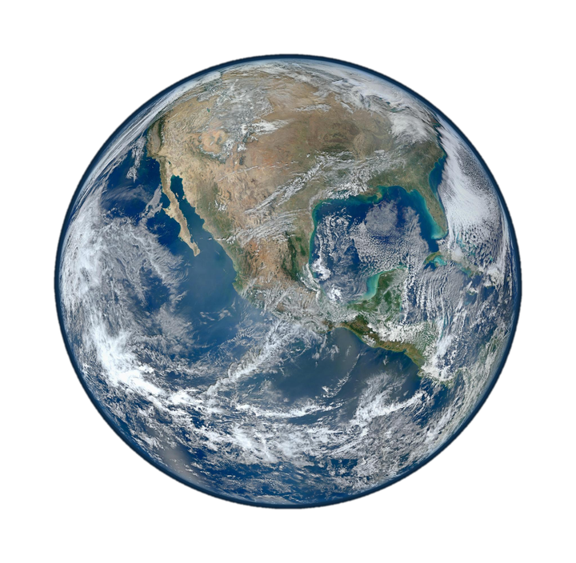
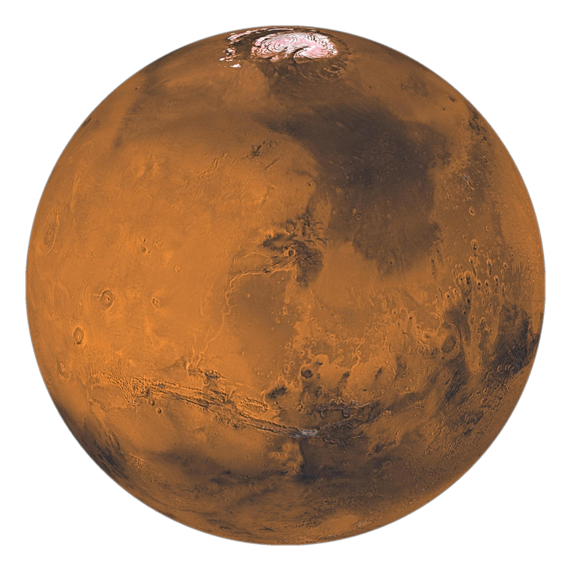
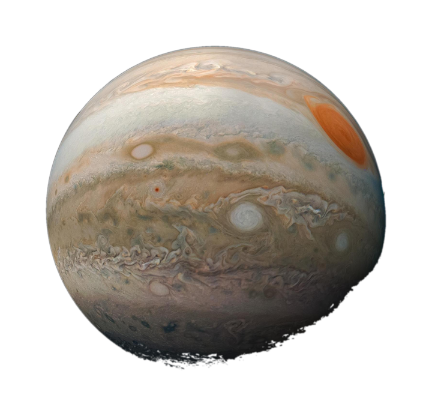
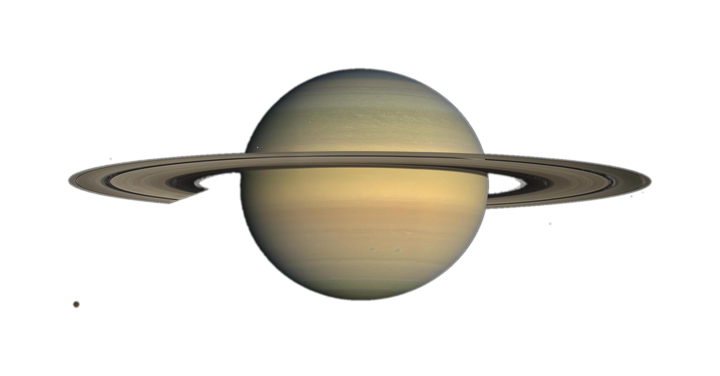
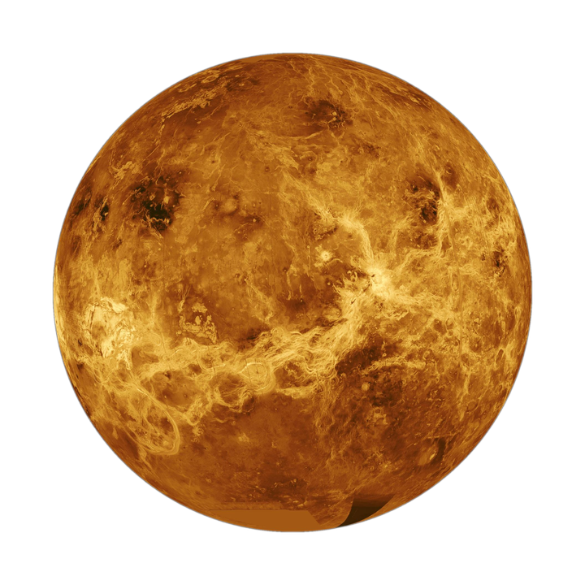
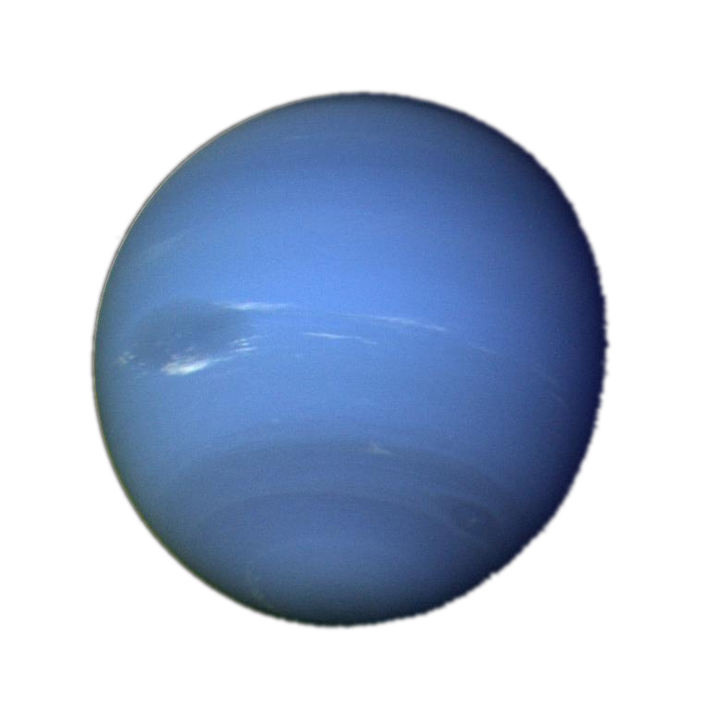

候选人画像总览
Candidate Overview
✕
Overall Score
由来源可靠性 + 获奖经历质量综合得出

基本信息Basic Info
信息完整清晰 · 缺标准头像照
9.0评分

教育与任职Education & Employment
履历链完整 · 早期任职证据偏少
8.6评分

奖项与资助Awards & Funding
奖项级别高 · 部分年份待核
8.2评分

论文与影响力Publications & Impact
引用数据充分 · 自述指标略高
7.8评分

学术服务Academic Service
有实质贡献 · 公开记录较少
7.0评分

综合评价Overall Evaluation
总体可信 · 个别来源需人工确认
8.4评分
点击任意 星球 查看该板块全部细节 · Click a planet to open full details